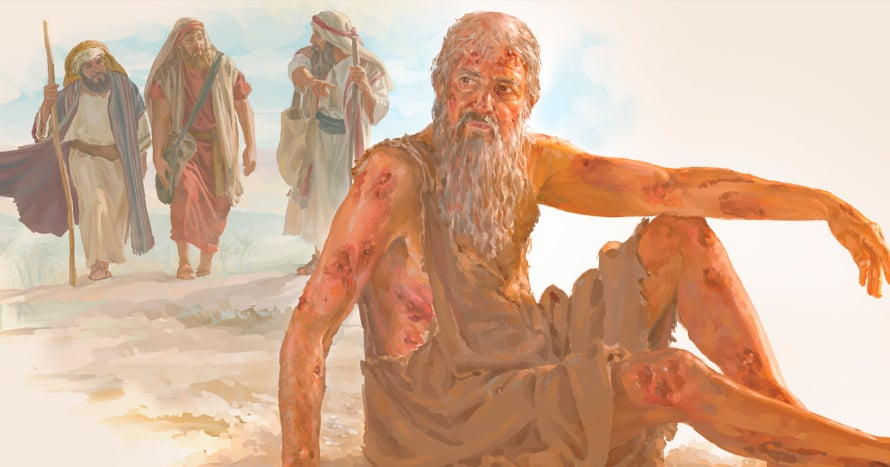

Hay una gran diferencia entre conocer a Dios por lo que otros cuentan y conocerlo por experiencia propia. Job había escuchado acerca de la grandeza, el poder y la fidelidad de Dios, pero fue en medio de la prueba, del dolor y de las preguntas sin respuesta donde llegó a tener un encuentro más profundo con Él.
Muchas personas conocen a Dios por tradición, por lo que les enseñaron sus padres, por lo que escuchan en la iglesia o por lo que leen en los libros. Pero llega un momento en que cada creyente necesita pasar de un conocimiento de segunda mano a una relación personal con Dios. Las pruebas que Job enfrentó no destruyeron su fe; la refinaron. Lo que parecía una temporada de pérdida se convirtió en una oportunidad para ver a Dios de una manera que nunca antes había visto. A veces, Dios permite procesos difíciles porque quiere revelarse más profundamente a nuestras vidas.
La pregunta para nosotros es: ¿Estamos viviendo de lo que hemos oído acerca de Dios o de lo que hemos experimentado con Él? Dios sigue revelándose a quienes lo buscan con sinceridad. No quiere ser solo una historia que conocemos, sino una realidad que vivimos.
Que hoy podamos decir como Job: "Antes te conocía por lo que me dijeron, pero ahora te conozco porque he visto tu mano obrando en mi vida, he sentido tu consuelo en la aflicción y he experimentado tu fidelidad en medio de la tormenta.
Cuando los ojos espirituales se abren, la fe deja de ser información y se convierte en convicción. Y quien ha visto a Dios obrar jamás vuelve a ser el mismo.